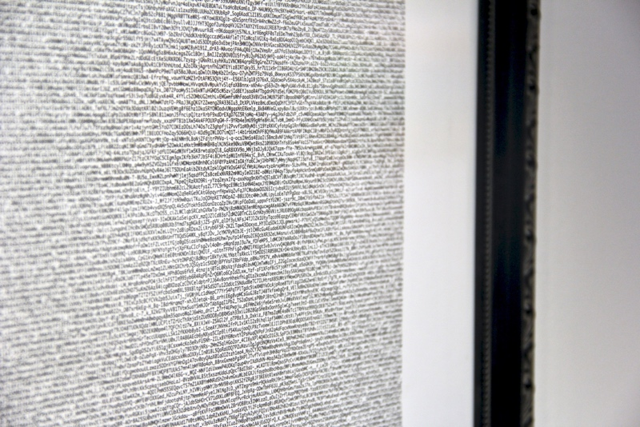
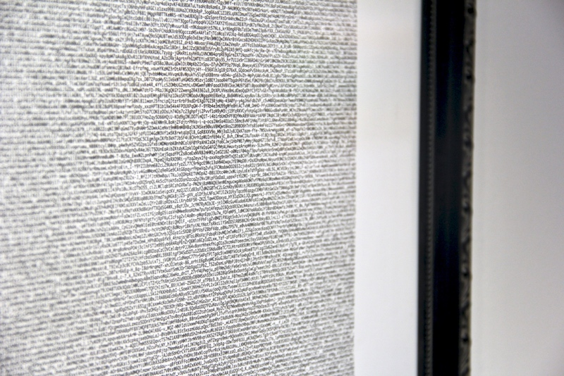
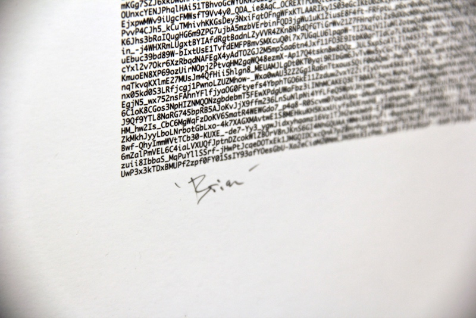
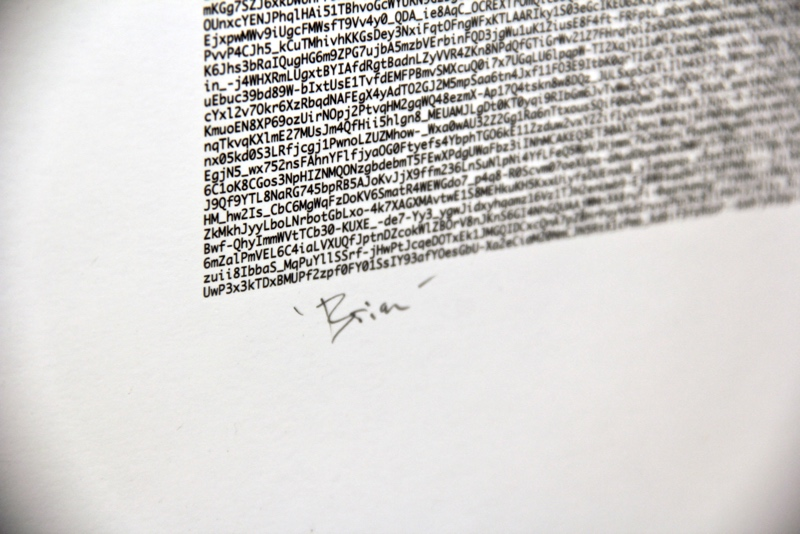

 


Facebook uses face recognition software to identify its users in photos. This works via a 'template' of your facial features—the distance between your eyes, the symmetry of your mouth—that generally do not change over time. Unlike a photograph, which captures some ephemeral expression of who you are at a particular moment, a face recognition template forever remains your portrait. It is all possible photos, taken and untaken, by which you, or someone else, might document your life.
Eternal Portraits is a series of printed and framed face recognition template data from our friends and ourselves. They are Facebook's proprietry data, legible only their machines.